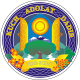
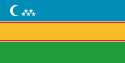

ウズベキスタンは12の州（viloyat、ヴィラヤト）、1つの自治共和国（respublika、レスプブリカ）、1つの特別市（shahar、シャハル）に分かれる。
| No. | 州旗 | 州名 | 州都 | 面積 | 人口 | 人口密度 |
|---|---|---|---|---|---|---|
| 1 |  | タシュケント特別市 | - | 334 km² | 2,424,100 人 | 7,413 人/km² |
| 2 | アンディジャン州 | アンディジャン | 4,200 km² | 2,962,500 人 | 689 人/km² | |
| 3 | ブハラ州 | ブハラ | 39,400 km² | 1,843,500 人 | 44 人/km² | |
| 4 | フェルガナ州 | フェルガナ | 6,800 km² | 3,564,800 人 | 509 人/km² | |
| 5 | ジザフ州 | ジザフ | 20,500 km² | 1,301,000 人 | 61 人/km² | |
| 6 | ナマンガン州 | ナマンガン | 7,900 km² | 2,652,400 人 | 369 人/km² | |
| 7 | ナヴォイ州 | ナヴォイ | 110,800 km² | 942,800 人 | 9 人/km² | |
| 8 | カシュカダリヤ州 | カルシ | 28,400 km² | 3,088,800 人 | 108 人/km² | |
| 9 | サマルカンド州 | サマルカンド | 16,400 km² | 3,651,700 人 | 218 人/km² | |
| 10 | シルダリヤ州 | グリスタン | 5,100 km² | 803,100 人 | 188 人/km² | |
| 11 | スルハンダリヤ州 | テルメズ | 20,100 km² | 2,462,300 人 | 123 人/km² | |
| 12 | タシュケント州 | タシュケント | 15,300 km² | 2,829,300 人 | 185 人/km² | |
| 13 | ホラズム州 | ウルゲンチ | 20,100 km² | 2,462,300 人 | 123 人/km² | |
| 14 |  | カラカルパクスタン共和国 | ヌクス | 160,000 km² | 1,817,500 人 | 11 人/km² |